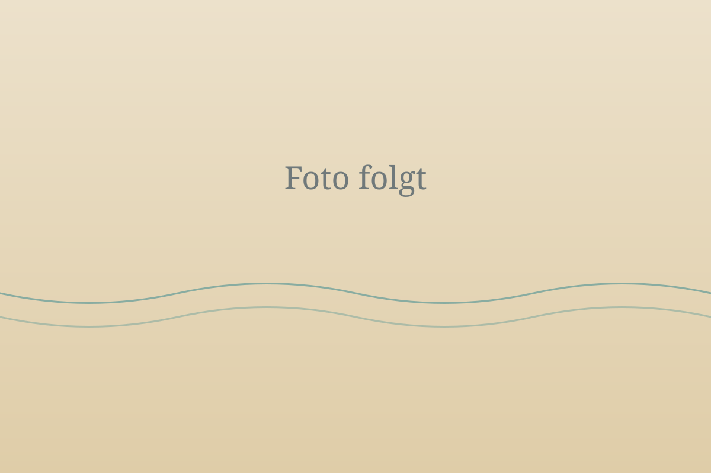

Fischbrötchen, Fang des Tages & Kaffeezeit
Von der Fischbude am Hafen bis zum Restaurant mit Meerblick. Hier gibt’s viel frischen Fisch. Reservieren kannst du direkt beim Restaurant.

Fischgenießerei
täglich ab 12 Uhr
Fischbrötchen, Backfisch und Krabben mit täglich wechselndem Angebot je nach Fang. Anders als eine reine Imbissbude hat das Stammhaus an der Knyphausenstraße Sitzplätze und nimmt Reservierungen an. Der Betrieb führt drei Standorte auf der Insel.
Zuletzt aktualisiert: 16.11.2026 · Von uns zusammengestellt, ohne Gewähr. Du bist der Betrieb? Übernimm deinen Eintrag. · Fehler melden
Norderneyer Fischmann
Bekannte Adresse für frische Fischbrötchen, zentral zwischen Ort und Hafen gelegen. Gut geeignet für unterwegs oder als Snack auf dem Weg zum Strand.
Zuletzt aktualisiert: 16.11.2026 · Von uns zusammengestellt, ohne Gewähr. Du bist der Betrieb? Übernimm deinen Eintrag. · Fehler melden
De Vries & Tretina
Bistro mit Fischbrötchen-Variationen, Fish and Chips und selbstgeräucherten Fischspezialitäten. Etwas gehobener als ein reiner Imbiss, aber weiterhin unkompliziert und auf Fisch fokussiert.
Zuletzt aktualisiert: 16.11.2026 · Von uns zusammengestellt, ohne Gewähr. Du bist der Betrieb? Übernimm deinen Eintrag. · Fehler melden
GOSCH
Bekannte Nordsee-Fischküche direkt am Kurplatz — frische Meeresdelikatessen und Fischbrötchen. Die überregional bekannte Marke sorgt für verlässliche Qualität und ein breites Angebot an Fischgerichten.
Zuletzt aktualisiert: 16.11.2026 · Von uns zusammengestellt, ohne Gewähr. Du bist der Betrieb? Übernimm deinen Eintrag. · Fehler melden
Restaurant Cornelius
Mediterrane Küche und hausgemachte Eisspezialitäten aus eigener Manufaktur, mit Blick auf die Strandpromenade.
Zuletzt aktualisiert: 16.11.2026 · Von uns zusammengestellt, ohne Gewähr. Du bist der Betrieb? Übernimm deinen Eintrag. · Fehler melden
Pizza und Pasta Manufactura
Mittwoch Ruhetag
Pizza und Pasta aus eigener Herstellung, dazu vegane und glutenfreie Gerichte. Mittwochs ist Ruhetag, sonst geöffnet ab dem Nachmittag.
Zuletzt aktualisiert: 16.11.2026 · Von uns zusammengestellt, ohne Gewähr. Du bist der Betrieb? Übernimm deinen Eintrag. · Fehler melden
Die Kaffeegeniesserei
Hausgemachter Kuchen und herzhafte Snacks wie Panini in gemütlicher Café-Atmosphäre. Gut geeignet für eine Pause zwischen Einkaufsbummel und Strandbesuch.
Zuletzt aktualisiert: 16.11.2026 · Von uns zusammengestellt, ohne Gewähr. Du bist der Betrieb? Übernimm deinen Eintrag. · Fehler melden
Surfcafe Norderney
Helles, modernes Café mit Glasfront, windgeschützter Terrasse und Meerblick. Passt gut zu einem entspannten Vormittag oder Nachmittag mit Blick aufs Wasser.
Zuletzt aktualisiert: 16.11.2026 · Von uns zusammengestellt, ohne Gewähr. Du bist der Betrieb? Übernimm deinen Eintrag. · Fehler melden
Frieseneis
Di–So 11–18 Uhr, Mo Ruhetag (März bis Oktober)
Die kleine Eisdiele gilt vielen als Ursprung der „Frieseneis"-Idee: Eis aus Küstenmilch, ohne künstliche Aromen und Farbstoffe, serviert in Waffel, Becher, Brötchen oder Flasche. Mit Außenplätzen direkt am Kurplatz gelegen, ideal für eine süße Pause zwischen Bummel und Strandbesuch. Etwas teurer als die meisten Eisdielen der Insel, dafür bekannt für Qualität ohne Zusatzstoffe.
Zuletzt aktualisiert: 16.11.2026 · Von uns zusammengestellt, ohne Gewähr. Du bist der Betrieb? Übernimm deinen Eintrag. · Fehler melden
Eiscafé San Marco
Italienisch geführtes Eiscafé mit italienischem Personal und wechselnden saisonalen Sorten — ein Stück „Klein-Italien" an der belebten Jann-Berghaus-Straße. Außenplätze direkt an der Einkaufsstraße bieten Blick auf das Inseltreiben. Saisonal geöffnet, im Winter geschlossen.
Zuletzt aktualisiert: 16.11.2026 · Von uns zusammengestellt, ohne Gewähr. Du bist der Betrieb? Übernimm deinen Eintrag. · Fehler melden
Haifischbar
Urige Kneipe mit komplett blau gestrichener Fassade, gemalten Hai-Silhouetten und einem hölzernen Schwertfisch am Eingang — maritimes Ambiente pur. Bitburger vom Fass, Sky-Sport-Übertragungen und regelmäßige Live-Musik-Abende sorgen für Stimmung bis in die Nacht. Geeignet für Erwachsene, die einen urigen Abend mit Sport oder Live-Musik suchen, weniger für ein klassisches Abendessen.
Zuletzt aktualisiert: 16.11.2026 · Von uns zusammengestellt, ohne Gewähr. Du bist der Betrieb? Übernimm deinen Eintrag. · Fehler melden
Klabautermann
Klassische, unprätentiöse Bier-Kneipe mit Tradition und Bitburger vom Fass — von morgens bis in den späten Abend geöffnet, sowohl für ein schnelles Bier als auch für einen langen Thekenabend. Im selben Gebäude befindet sich im Obergeschoss die Cocktailbar Pasadena.
Zuletzt aktualisiert: 16.11.2026 · Von uns zusammengestellt, ohne Gewähr. Du bist der Betrieb? Übernimm deinen Eintrag. · Fehler melden
Milchbar
Historischer Pavillon, 1910 als Lesehalle erbaut und seit 1996 Milchbar, heute mit verglastem Vorbau und weitem Blick auf die Nordsee — gleichzeitig Café, Bistro, Restaurant, Tee-Lounge und Strandbar. Ideal für Sundowner mit Meerblick ebenso wie für ein entspanntes Frühstück oder Mittagessen direkt am Weststrand. Mittwochs Ruhetag, Küche schließt um 20 Uhr.
Zuletzt aktualisiert: 16.11.2026 · Von uns zusammengestellt, ohne Gewähr. Du bist der Betrieb? Übernimm deinen Eintrag. · Fehler melden
de Leckerbeck
Restaurant mit regionaler Küche nach dem eigenen Motto „frisch, regional und ohne Zusatzstoffe", also mit bewusstem Verzicht auf Fertigprodukte. Die Karte ist übersichtlich gehalten und wechselt saisonal. Reservierung nur telefonisch.
Zuletzt aktualisiert: 16.11.2026 · Von uns zusammengestellt, ohne Gewähr. Du bist der Betrieb? Übernimm deinen Eintrag. · Fehler melden
Meine Meierei
1881 ursprünglich als Molkerei erbaut, heute ein kultiges Traditionslokal und ostfriesisches Wirtshaus mit moderner Regionalküche und Spezialitäten vom Holzkohlegrill. Highlight ist „Rückers Käsefondue", dazu ein Teezimmer mit Teeflatrate sowie ausdrücklich vegetarische und vegane Optionen. Außenterrasse vorhanden, Reservierungen werden nicht angenommen.
Zuletzt aktualisiert: 16.11.2026 · Von uns zusammengestellt, ohne Gewähr. Du bist der Betrieb? Übernimm deinen Eintrag. · Fehler melden
Bambusgarten
Seit über 15 Jahren familiengeführtes asiatisches Restaurant mit Fokus auf Sushi und vietnamesische Küche, modernes Design mit traditionellen Akzenten. Lieferservice ab 20 € Bestellwert, Räumlichkeiten für private Feiern bis 60 Gäste.
Zuletzt aktualisiert: 16.11.2026 · Von uns zusammengestellt, ohne Gewähr. Du bist der Betrieb? Übernimm deinen Eintrag. · Fehler melden
Champa Ney
Asiatisches Fusion-Restaurant mit Anspruch auf hochwertige, originalgetreue Gerichte, dazu hausgemachte Kuchen am Nachmittag sowie eine kleine Wein-Auswahl. Zusätzlich betreibt das Haus einen „Champa Ney To Go"-Stand für schnelle Snacks wie Frühlingsrollen.
Zuletzt aktualisiert: 16.11.2026 · Von uns zusammengestellt, ohne Gewähr. Du bist der Betrieb? Übernimm deinen Eintrag. · Fehler melden
Restaurant Seesteg
Reservierung empfohlen
Sternerestaurant im gleichnamigen Hotel direkt am Weststrand, ausgezeichnet mit einem MICHELIN-Stern und 15 Gault-Millau-Punkten. Küchenchef ist seit 2012 Markus Kebschull, seine Küche ist klassisch grundiert mit modernen Akzenten. Offene Küche, Blick auf die Nordsee und eine Terrasse zum Meer. Reservierung wird dringend empfohlen.
Zuletzt aktualisiert: 16.11.2026 · Von uns zusammengestellt, ohne Gewähr. Du bist der Betrieb? Übernimm deinen Eintrag. · Fehler melden
Müllers auf Norderney
Restaurant von Nelson Müller, eröffnet im Mai 2023 als dritter Standort der Marke. Direkt an der Strandpromenade mit Meerblick und Terrasse, innen modern und zurückhaltend eingerichtet. Auf der Karte stehen Brasserie-Klassiker wie Tatar und Bouillabaisse neben Schnitzel, frischem Fisch und Austern. Vom MICHELIN Guide 2025 mit einem MICHELIN Key ausgezeichnet.
Zuletzt aktualisiert: 16.11.2026 · Von uns zusammengestellt, ohne Gewähr. Du bist der Betrieb? Übernimm deinen Eintrag. · Fehler melden
Weisse Düne
täglich ab 11 Uhr
Reservierung empfohlen
Strandlokal mit über 300 m² direkt am Oststrand. Tagsüber gibt es eine unkomplizierte Karte mit regionalen Gerichten wie Kartoffelsuppe mit Krabben oder Strandburger, abends ab 18 Uhr wird à la carte im gehobeneren Rahmen serviert. Dazu kommen ein Chef's Table für vier Gäste in der Küche und Weinabende. Hunde sind willkommen; mittags ohne Reservierung, abends mit.
Zuletzt aktualisiert: 16.11.2026 · Von uns zusammengestellt, ohne Gewähr. Du bist der Betrieb? Übernimm deinen Eintrag. · Fehler melden
Marienhöhe
tägl. 10–22 Uhr, Di Ruhetag
Traditionslokal im achteckigen Pavillon auf der Hohen Düne im Nordwesten der Insel, mit seinen gelben Sonnenschirmen weithin sichtbar. Von dort geht der Blick weit über Strand und Meer. Die Karte beschreibt sich selbst als friesisch mit einem Hauch der weiten Welt: Krabbenbrot und Backfisch stehen neben Nordsee-Bruschetta und Couscous. Nachmittags gibt es hausgebackene Kuchen, Frühstück von 10 bis 12 Uhr.
Zuletzt aktualisiert: 16.11.2026 · Von uns zusammengestellt, ohne Gewähr. Du bist der Betrieb? Übernimm deinen Eintrag. · Fehler melden
Gute Stube
Restaurant im Hotel Villa Breeksee am Weststrand mit Klassikern à la carte und saisonalen Spezialitäten. Neben Gerichten von Land und See stehen ausdrücklich vegetarische und vegane Optionen auf der Karte. Auch für Gäste offen, die nicht im Hotel wohnen.
Zuletzt aktualisiert: 16.11.2026 · Von uns zusammengestellt, ohne Gewähr. Du bist der Betrieb? Übernimm deinen Eintrag. · Fehler melden
Norderneys Konditorei
Mo–Sa 7:30–12 Uhr
Kleine handwerkliche Konditorei mit Konfitüren, Teegebäck und Brötchen. Torten auf Bestellung bietet der Betrieb nach eigenen Angaben nicht mehr an. Saisonal gibt es Spezialitäten wie Stutenkerle zu Nikolaus und Osterhasen auf Vorbestellung. Brötchen lassen sich zur Abholung in der Backstube vorbestellen.
Zuletzt aktualisiert: 16.11.2026 · Von uns zusammengestellt, ohne Gewähr. Du bist der Betrieb? Übernimm deinen Eintrag. · Fehler melden
Oktopussy
tägl. 17–22 Uhr
Restaurant des Hotels New Wave, aufgenommen in den MICHELIN Guide Deutschland 2026. Die Küche ist regional geprägt mit internationalen Akzenten, der Raum modern-maritim mit offener Küche. Frühstück täglich von 8 bis 11:30 Uhr, abends ab 17 Uhr.
Zuletzt aktualisiert: 16.11.2026 · Von uns zusammengestellt, ohne Gewähr. Du bist der Betrieb? Übernimm deinen Eintrag. · Fehler melden
N'eys
nur Fr–So geöffnet
Gourmetrestaurant im Wintergarten des Strandhotels Georgshöhe mit Meerblick. Die Küche verbindet nach eigener Beschreibung friesische Bodenständigkeit mit mediterraner Leichtigkeit. Ausdrücklich auch für Gäste offen, die nicht im Hotel wohnen. Geöffnet nur von Freitag bis Sonntag.
Zuletzt aktualisiert: 16.11.2026 · Von uns zusammengestellt, ohne Gewähr. Du bist der Betrieb? Übernimm deinen Eintrag. · Fehler melden
neysPLACE
tägl. ab 13 Uhr
Seeterrasse, Bar und Lounge am Strandhotel Georgshöhe mit direktem Blick auf die Nordsee. Die Karte reicht nach eigener Beschreibung von edel bis rustikal, von Bratwurst mit Pommes bis zum Hummermenü. Bei schlechtem Wetter steht ein Innenbereich bereit.
Zuletzt aktualisiert: 16.11.2026 · Von uns zusammengestellt, ohne Gewähr. Du bist der Betrieb? Übernimm deinen Eintrag. · Fehler melden
Esszimmer
Di–Sa 13–22 Uhr · Mo & So Ruhetag
Restaurant des Hotels Inselloft mit junger, frischer Küche, serviert an einer Tafel mit Blick in die offene Küche. Im selben Raum liegt ein Wein-Deli mit wandhohem Weinregal, dazu gibt es regelmäßig Wine-and-Dine-Abende. Abendservice ab 18 Uhr. Hunde sind hier nicht erlaubt.
Zuletzt aktualisiert: 16.11.2026 · Von uns zusammengestellt, ohne Gewähr. Du bist der Betrieb? Übernimm deinen Eintrag. · Fehler melden
Inselloft Bäckerei
Di–So 7–17 Uhr · Mo geschlossen
Handgemachte Brote, Brötchen, Croissants und Kuchen, dazu Kaffee und Tee. Ab 10:30 Uhr werden frische Waffeln gebacken. Gehört zum Hotel Inselloft, ist aber für alle offen.
Zuletzt aktualisiert: 16.11.2026 · Von uns zusammengestellt, ohne Gewähr. Du bist der Betrieb? Übernimm deinen Eintrag. · Fehler melden
Café Extrablatt
tägl. 9–23 Uhr
Café direkt am Kurplatz neben dem bade:haus, seit 2006 auf der Insel. Es gibt ein Frühstücksbuffet, dazu Pizza, Burger, Wraps und warme Gerichte. Ab 18 Uhr läuft die Shaker Time mit Cocktails zum Einheitspreis.
Zuletzt aktualisiert: 16.11.2026 · Von uns zusammengestellt, ohne Gewähr. Du bist der Betrieb? Übernimm deinen Eintrag. · Fehler melden
Düne13
ab 10 Uhr, Küche 11–19 Uhr
Insel-Biergarten mit Oberdeck direkt am Leuchtturm, gesessen wird teils in Strandkörben. Auf der Karte stehen Schnitzel, Currywurst, Kibbeling, Scholle und frisch geräucherter Aal, dazu selbstgebackener Kuchen und Ostfriesentee. Das Oberdeck öffnet ab 11 Uhr.
Zuletzt aktualisiert: 16.11.2026 · Von uns zusammengestellt, ohne Gewähr. Du bist der Betrieb? Übernimm deinen Eintrag. · Fehler melden
Das Alte Brauhaus
So–Do 16–23 Uhr, Fr–Sa 16–24 Uhr
Stammhaus der 2012 gegründeten Norderneyer Hausbrauerei mit Ausschank der eigenen Biere und wechselnder Speisekarte. Reservierungen sind nicht möglich, man kommt einfach vorbei.
Zuletzt aktualisiert: 16.11.2026 · Von uns zusammengestellt, ohne Gewähr. Du bist der Betrieb? Übernimm deinen Eintrag. · Fehler melden
Weststrand-Bar
März bis Oktober
Strandbar des Norderneyer Brauhauses direkt an der Promenade mit Ausschank der eigenen Biere im Freien. Geöffnet nach eigener Angabe ab 12 Uhr, bis die Sonne untergeht, bei kühlem Wetter auch kürzer.
Zuletzt aktualisiert: 16.11.2026 · Von uns zusammengestellt, ohne Gewähr. Du bist der Betrieb? Übernimm deinen Eintrag. · Fehler melden
Die Brauhalle
tägl. 12–18 Uhr
Ausschank direkt in der Brauerei im Gewerbegebiet, wo das Norderneyer Bier heute produziert wird. Es gibt Bier mit einer Auswahl an Snacks in Brauereiatmosphäre.
Zuletzt aktualisiert: 16.11.2026 · Von uns zusammengestellt, ohne Gewähr. Du bist der Betrieb? Übernimm deinen Eintrag. · Fehler melden
Giftbude
Restaurant direkt am Weststrand mit großer windgeschützter Terrasse. Trotz des ungewöhnlichen Namens steht eine überwiegend italienisch-mediterrane Karte auf dem Tisch. Zu den Ruhetagen machen die Quellen unterschiedliche Angaben, ein Anruf lohnt sich.
Zuletzt aktualisiert: 16.11.2026 · Von uns zusammengestellt, ohne Gewähr. Du bist der Betrieb? Übernimm deinen Eintrag. · Fehler melden
Schmuggler
tägl. 11–14 & 17–20 Uhr · Mi Ruhetag
Eines der ältesten Restaurants der Insel, seit über 45 Jahren in Betrieb und seit 2018 von Michael Kleimann geführt, zuvor unter dem Namen Old Smuggler. Dunkle Holzmöbel, ein schiffsförmiger Tresen und maritime Deko prägen den Raum. Auf der Karte stehen Fleischgerichte und Fischspezialitäten.
Zuletzt aktualisiert: 16.11.2026 · Von uns zusammengestellt, ohne Gewähr. Du bist der Betrieb? Übernimm deinen Eintrag. · Fehler melden
Diamonds Club
Diskothek mit Tanzfläche, DJ-Musik aus House, R&B und Charts sowie einer Cocktailbar. Eröffnet im April 2024 in den früheren Räumen von Tante Jens.
Zuletzt aktualisiert: 16.11.2026 · Von uns zusammengestellt, ohne Gewähr. Du bist der Betrieb? Übernimm deinen Eintrag. · Fehler melden
Pasadena
Cocktailbar im Obergeschoss über der Kneipe Klabautermann, spezialisiert auf verschiedene Gin-Sorten. Der Raum hat Tradition als Tanzlokal. Eine eigene Website gibt es nicht, wohl aber eine gepflegte offizielle Facebook-Seite.
Zuletzt aktualisiert: 16.11.2026 · Von uns zusammengestellt, ohne Gewähr. Du bist der Betrieb? Übernimm deinen Eintrag. · Fehler melden
Friesenschänke
À-la-carte-Restaurant des Hotel Friese mitten in der Fußgängerzone. Auch für Gäste geöffnet, die nicht im Hotel wohnen.
Zuletzt aktualisiert: 16.11.2026 · Von uns zusammengestellt, ohne Gewähr. Du bist der Betrieb? Übernimm deinen Eintrag. · Fehler melden

Café Strandgut (Beispiel)
Sommer: täglich 9–18 Uhr · Winter: Mi–So 10–17 Uhr
So sieht ein Eintrag aus: Kuchen, Kaffee und Blick aufs Meer. Diesen Betrieb gibt es nicht.
[LUIS-TIPP: kurzer persönlicher Satz]
Zuletzt aktualisiert: 15.11.2026 · Angaben vom Betrieb, ohne Gewähr · Fehler melden
Zu dieser Auswahl gibt es noch keinen Eintrag. Probier einen anderen Filter.
Weitere Restaurants & Cafés
Von Steakhouse über Pizzeria bis Kneipe — eine laufend aktualisierte Gastronomie-Übersicht findest du bei der Staatsbad Norderney GmbH.
Du hast selbst einen Betrieb auf Norderney? Trag ihn kostenlos ein.
Insel-Klassiker
Kaffee & Kuchen im Conversationshaus
Im historischen Conversationshaus am Kurplatz servieren Orangerie, Salonbar und Terrasse Tee, Kaffee, Kuchen und weitere Köstlichkeiten — mitten im kulturellen Zentrum der Insel und direkt neben der Tourist-Information.
Mehr zum Conversationshaus
Die Öffnungszeiten ändern sich je nach Saison stark. Eine vollständige Liste aller Restaurants, Cafés und Imbisse findest du in der Gastro-Suche auf norderney.de.